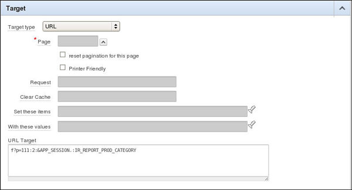
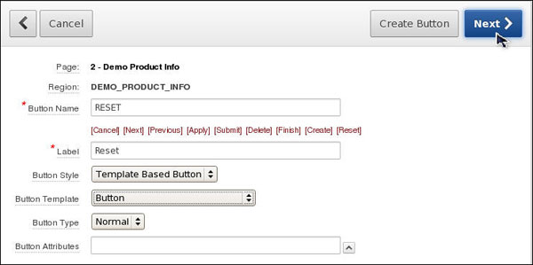

Utilizing Advanced Interactive Report Region Techniques
Overview
- Perform the Building and Customizing an Interactive Report in Oracle Application Express 4.2 tutorial.
Purpose
This tutorial shows you how to use some advanced techniques with Interactive Report Regions in Oracle Application Express 4.2.
Time to Complete
Approximately 50 minutes
Introduction
In this tutorial, you explore some of the more advanced tasks related to Interactive Report Regions in Oracle Application Express such as resetting your interactive report manually, created a declarative filter and a derived column.
Prerequisites
Before starting this tutorial, you should:
Linking a Saved Report from Another Page in Your Application
In the Building
and Customizing an Interactive Report tutorial, you
created an application with an Interactive Report. In
this section of this tutorial, you add a link to a saved report
on your Home page.
Perform the following steps:
Enter the following URL to log in to Oracle Application Express.
http://localhost:8080/apex
To log in to Oracle Application Express, enter the
following details, and click Login to Application Express.
Workspace: OBE
Username: OBE
Password: oracle

Select the drop down next to Application Builder and select Database Applications.
If you performed the prerequisite tutorial, the list of application is in View Report mode. Click the Run icon for the Interactive Reports OBE.
Enter obe for Username and oracle for Password and click Login.
Select the Demo Product Info link from the Home Page to view the report.
The last saved report you viewed is displayed. You want to manage the saved reports you created. Select the Edit Page in your developer toolbar.
Right-click DEMO_PRODUCT_INFO and select Edit Saved Reports.
The list of saved reports are displayed. You can change the Report Alias to be more meaningful. Enter PROD_CATEGORY for the Report Alias for the Public report and click Apply Changes.
Notice that the alias in the Link Example changed. You can add this link to your Navigation region on the Home Page. Select the Link Example and press ctrl+c to copy it to the clipboard. Then select the Application breadcrumb.
You want to add the link to the Home page. Select the Home page icon.
Right click the Navigation Region and select Edit List.
Click Create List Entry >.
Enter Product Report by Category for List Entry Label, select URL Target for Target type and enter the URL you copied from the Saved Reports page to the URL field and click Create List Entry.

Your entry was created successfully. Click the Run Page icon.
Select the Product Report by Category link.
The Saved Report is displayed. In the next section you will create a reset button to reset the report manually. Select the Edit Page link in the developer toolbar.
Resetting your Interactive Report Manually
As a developer, you have the ability to include or exclude the Reset function, Actions Menu, or Search Bar all together. Without the Reset function on the Actions Menu, your end-users will not have the ability to reset their report after they have customized it using the Column Heading menu. To allow for resetting, you can programmatically Interactive Report, then exclude the Search bar, and lastly, create a reset button. Perform the following steps:
You want to create a button to perform the reset function. Right-click Region Buttons for the DEMO_PRODUCT_INFO region and select Create.
Enter Reset for the button name and select Template Based Button for Button Attributes. Click Next >.

Select Right of Interactive Report Search Bar for Position and click Next >.
To reset an Interactive Report, you send a clear cache
request of 'RIR'. This resets the Interactive Report on
whichever page is called. Select Redirect to Page in
this Application for Action. Enter the current page
for Page. For Clear Cache, and enter 2,RIR and click
Create Button.
Note: The RIR string is equivalent to the end user choosing
the Reset option from the interactive report actions menu on
the target page and causes the report to be returned to the
default report settings specified by the developer.
You also need to remove the Reset option from the Actions menu. Right-click the DEMO_PRODUCT_INFO region and select Edit Report Attributes.
Click the Search Bar subtab.
Deselect the Reset check box and click Apply Changes.
Your button was created successfully. Click the Run page icon.
Click the Reset button.
The report is reset back to the Primary Report (rather than the Product Report by Category public report). In the next section you create a declarative filter which passes filter values using a URL item value. Select the Application<n> link in the developer toolbar.
Creating a Declarative Filter
You can define declarative filters on Interactive Reports by passing filter criteria using the URL item values. This allows you to define complex query criteria that can be translated into filters or drill downs from a report to an interactive report. To create a drill down from one interactive report to another, perform the following steps:
Navigate to the Application page. Click Create Page >.
Select the Report radio button and click Next >.
Select Interactive Report and click Next >.
Enter Products by Category for the Page Name and Region Name. Select Breadcrumb for Breadcrumb. Enter Products by Category for Entry Name. Select the Home link for the Parent Entry and click Next >.
Accept the default and click Next >.
Enter the following SQL, select No for Link to
Single Row View and click Next >.
select distinct p.category,
(select count(product_id) from
demo_product_info where category=p.category) Products
from demo_product_info p;
Click Create.
Your interactive report page was created successfully. Before you run the page, you need to make some changes. Click Edit Page.
Under Regions, right click Products by Category and select Edit Report Attributes.
You want to create a link to the interactive report on page 2 from Products. Select the Edit icon in front of the PRODUCTS column.
Click the Column Link tab.
You need to define a link that will display the list of
products for a category on Page 2, clear the cache on Page 2
and reset the interactive report region on Page 2 to remove
any previously set filters that might interfere with the
filter being passed. In addition, you need to pass in a
value for the hidden CATEGORY. To reference a column within
an interactive report, you preface the column alias with
'IR_'.
Select [PRODUCTS] for Link Text, enter 2 for
Page (which is the page you just created) and enter 2,RIR
in the Clear Cache field. Enter IR_CATEGORY in the
Item 1 Name field and select #CATEGORY# for Value.
Then click Apply Changes.
Note: By prefixing the item name with IR_, in this example IR_CATEGORY, the URL item will be associated with an interactive report column rather than an item on a page.
Click the Run Page icon.
The Products value now has a link. Click one of the numbers.
The Demo Product Info Interactive report is now shown and there is a filter created on Category. In the next section, you create a derived column and then create a highlight based on the filter. Click Edit Page in the developer toolbar
Creating Derived Columns
In this section, you add a derived column to your query. Specifically, you use a case statement to determine whether a product has been undersold based on how many customers have ordered a product. You then use the value of this derived column to create a highlight rule to highlight all undersold products. Perform the following steps:
Right click the region DEMO_PRODUCT_INFO and select Edit.
Select the Source tab.
Change the source to the following query and click the Report Attributes tab.
Note that the CASE statement in this SQL statement checks to see if the employee's salary is less than the minimum salary for their job. If so, the value of the derived column, UnderPaid_Yes_No, is set to Yes, otherwise, it is set to No. The derived column is not displayed initially but it is available for use with many actions on the Actions menu such as a Filter and Highlight.
select p.product_id,p.product_name,
p.product_description,
p.category, p.product_avail,
p.list_price,
(select sum(quantity)
from demo_order_items
where product_id = p.product_id) units,
(select max(o.order_timestamp) od from demo_orders o, demo_order_items i
where o.order_id = i.order_id
and i.product_id = p.product_id) last_date_sold, p.PRODUCT_ID image,
(case when (select count(o.customer_id) from demo_orders o, demo_order_items t
where o.order_id = t.order_id
and t.product_id = p.product_id
group by p.product_id) < 5 then 'Yes'
else 'No' end) UnderSold_Yes_No
from demo_product_info p;
The additional column will be added to your report. Click Apply Changes.
Right click the region DEMO_PRODUCT_INFO and select Edit.
Click Report Attributes.
Notice that your derived column is in the list of Column Attributes. You need to turn Highlight back on in your Search Bar. Click the Search Bar subtab.
Select the check box next to Highlight and click Apply Changes.
Click Run.
Your report is displayed. To show the products that are undersold, select the Actions menu and select Format > Highlight.
Enter Undersold Products as Name and select [yellow] for Background Color. Select Undersold Yes No for Column and enter Yes for Expression and click Apply.
Notice that the products that are undersold are now highlighted in yellow. Deselect the check box to disable the Category filter.
The filter is disabled so that all the products that are undersold are now highlighted in yellow.
Summary
- Link your saved report from another page
- Reset your Interactive Report Manually
- Create a declarative filter
- Create a derived columns
- Oracle Application Express homepage on OTN.
- Oracle Learning Library
- Oracle University
- Lead Curriculum Developer: Dimpi Sarmah
- Other Contributors: David Peake, Chaitanya Koratamaddi
In this tutorial, you have learned how to:
Resources
Credits
To navigate this Oracle by Example tutorial, note the following:
- Hide Header Buttons:
- Click the title to hide the buttons in the header. To show the buttons again, click the title again.
- Topic List:
- Click a topic to navigate to that section.
- Expand All Topics:
- Click the button to show or hide the details for the sections. By default, all topics are collapsed.
- Hide All Images:
- Click the button to show or hide the screenshots. By default, all images are displayed.
- Print:
- Click the button to print the content. The content that is currently displayed or hidden is printed.
To navigate to a particular section in this tutorial, select the topic from the list.